NEXA: find every radio signal, name it, read what it says
Too many transmitters share the air: how does one operator know what is out there, and what it says?
BEFORE · THE AIR RIGHT NOW LIVE
top: signal strengthbottom: waterfall, newest at the top ↓frequency in kHz →
Many signals at once: voice, Morse, hopping radios, radar pulses, data links and a sweeping jammer. This is the mix NEXA has to sort out.
→
AFTER · WHAT NEXA SEES

One real capture, five transmitters, each boxed and named. An operator can follow one channel at a time; NEXA follows all of them.
01
›
Find
box every transmitter
02
›
Name
60 kinds of signal
03
Read
voice and Morse to text
Datasets and accuracy: what NEXA learned, and how well
1.2 M labelled 160 µs windows · 60 classes · conditions under every number
THE DATASET
60
classes in 11 families + noise floor
1.2 M
windows, 1,000 per class per SNR level
160 µs
per window: 512 IQ samples at 3.2 MS/s (±1.6 MHz)
16
SNR levels, −10 to +20 dB in 2 dB steps
Sources: our own generators + public RadioML 2018 and HisarMod. Real recordings: testing only. Build f993d8ebc417: every family placed anywhere in the band.
HOW WELL IT NAMES THEM
per tracked emitter · all 60 classes · SNR ≥ 10 dB · vote over 16 windows (2.6 ms) · fixed test set, 120,000 windows
all 60 classes at 15 dB · vote over 8 windows · 32 fresh tracks per class
46 / 60
classes named exactly ≥ 50%
≥ 90%: 38 50–89%: 815 dB · 8-window vote
+8.7
points over the previous model
same fixed test set · fixed FSK / PSK / QAM data + the new physics branch
FOUR STRENGTHS

One radar chirp from −10 dB (buried) to +20 dB (clear). Training covers it all, so the model knows when to say "uncertain".
A LONGER LOOK

The tracker averages every window of one emitter: 8 windows (1.3 ms) already reach 79% at ≥ 10 dB.
FAMILIES AND THEIR MEMBERS
Data processing pipeline: from IQ samples to a named emitter
Real model, real signal: a jammer copying a radar
1 · SEE THE BAND, CUT OUT EACH TRANSMITTER
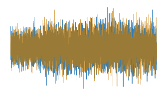
Capture
Raw radio samples (IQ) from an antenna, a recording or the simulator.
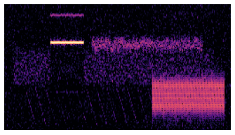
Wideband spectrogram
The whole band as a picture. Every transmitter leaves its own mark.
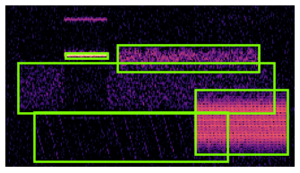
Find them (YOLO detector)
Draws a box around every transmitter, many at once.
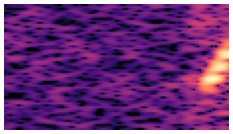
Cut and clean
Each box is cut out, cleaned and sliced into short 160 µs pieces for the classifier.
2 · NAME IT: ONE SLICE THROUGH THE MODEL LIVE
ONE SLICE
160 µs
turned down to the same volume, so it judges shape, not loudness
IQ BRANCH · the wave
reads the raw wave over time: pulses, rhythm, on / off
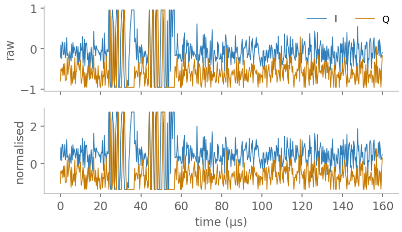
STFT BRANCH · the picture
reads time against frequency: sweeps, hops, shapes. Here: the chirp and its jammer copy
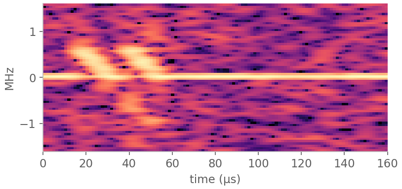
SPECTRUM BRANCH · the band
reads where the power sits: width, peaks, carrier lines
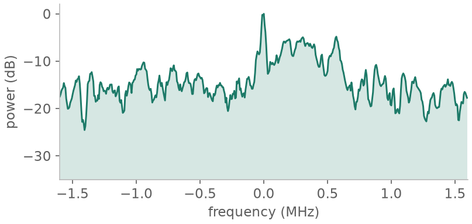
COMBINE
wave + picture, moment by moment
ATTENTION
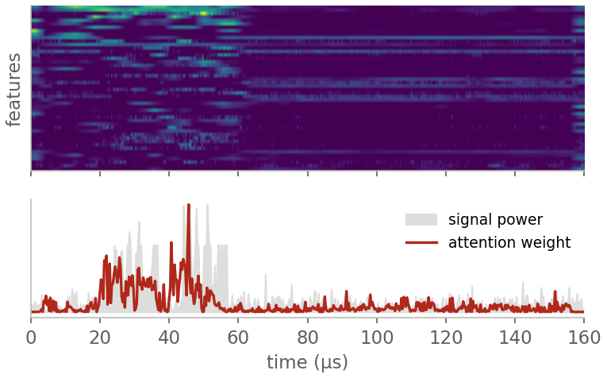
looks where the signal is, skips empty time
FINGERPRINT
what the three branches learned
+ expert checks we know from radio physics: echoes, symbol clock, frequency wobble, on / off timing
60 YES / NO SCORES
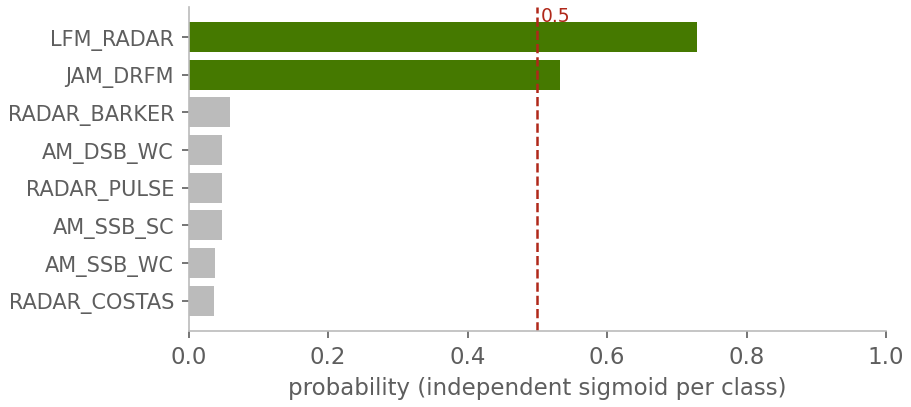
one score per signal type, so two can be true: radar and jammer
VOTE + RULES → ANSWER
DRFM jammer copying an LFM radar HIGH
all slices of one transmitter vote; simple rules settle look-alikes; confidence high / medium / uncertain
A walkie-talkie takes the same path: named NBFM, then listened to (next page)
Inside NEXA: system architecture
After a signal is named: listen, read, show, record, and people stay in control
SYSTEM ARCHITECTURE LIVE
OFFLINE · ONE LAPTOP · NOTHING LEAVES THE MACHINE
1 · INPUT, NAMED BY THE PIPELINE
SDRconnect
our own antenna, live or recorded
KiwiSDR
a shortwave receiver on the internet
Upload
drop in a recorded file
Pipeline → every signal named
found, named, with where, when and how sure
2 · LISTEN AND READ · voice, Morse and data channels

Zoom-in
look closer: is it AM, FM, SSB or Morse?

Demodulate
turn the radio wave back into sound
Decode to text
Speech → Whisper · Morse → letters · RTTY / PSK31 → text
AI reading, kept honest
a local AI sums it up, and only says what the text backs up
3 · SHOW
Operator dashboard
live waterfall, one row per signal, alerts
Signal Pipeline + Comms Intel
every run kept: sound, text, AI summary
AI Assistant
ask questions in plain words, offline
4 · RECORD · LOCAL DATABASE
Local database
every result, fix and model version
Audit trail
a log nobody can quietly change
Raw IQ store
original recordings, fingerprinted
5 · HUMAN IN THE LOOP · NEXA SUGGESTS, PEOPLE DECIDE
1 · Operator checks
flags or fixes an answer in one click
2 · Analyst approves
double-checks before a fix counts
3 · Retrain
the model learns from approved fixes
4 · Gate
only a better model gets through
Yes → goes live
roll back any time
No → stays out
Live demos: a recorded signal, our walkie-talkie, real shortwave
What to watch for in each demo: the box, the name, the words and the AI reading
DEMO 1 · A RECORDED SIGNAL
RECORDED SIGNAL · NOT A LIVE INTERCEPT
DEMO 2 · OUR WALKIE-TALKIE LIVE
we speak
walkie-talkie
antenna + RSPduo
laptop A
laptop B · NEXA
The voice
Sent as narrow FM: the wave speeds up and slows down with the voice
NBFM = narrowband FM · the voice wobbles the wave's frequency inside a ~12.5 kHz channel
spot the channel›name it NBFM›back to speech›transcript + AI reading
DEMO 3 · ONE RECEIVER, TWO LAPTOPS
KiwiSDR receiver
over the internet, each laptop on its own
shortwave 0–30 MHz · one ~12 kHz channel · listen only
Laptop A · website
listen · waterfall · TDoA
Laptop B · NEXA
stream · name · decode
location, typed in
WHAT NEXA DOES WITH IT
WHERE IS IT COMING FROM? · TDoA
Three or more GPS-timed receivers hear the same signal; the tiny differences in arrival time point to the transmitter. A teammate runs it on the KiwiSDR website and types the location into NEXA's Locate on KiwiSDR panel.
needs internet on both laptopsall receivers must hear it clearlya likely area, not an exact pointpress Stop afterwards: frees the slot
Conclusion: what we showed today
Three live inputs, one offline system, from the raw air to an answer people can check
THREE DEMOS, ONE SYSTEM
A recorded signal
boxed, named NBFM, turned back into speech and read
boxnametranscript
Our own walkie-talkie
our voice, caught by the antenna, turned into text with an AI reading
liveNBFMAI reading
Real shortwave
a station far away, decoded, and located with KiwiSDR TDoA
real worlddecodedlocated
BY THE NUMBERS
60
signal classes, incl. radar and jamming
80.6%
exact class per tracked emitter, ≥ 10 dB
89%
right family, 15 dB
1 laptop
everything analysed offline, nothing leaves it
FROM THE AIR TO AN ANSWER
Capture
a recorded file, our antenna or KiwiSDR
demos 1, 2, 3
Find
every transmitter boxed, many at once
page 3
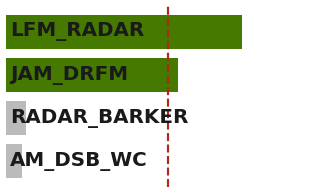
Name
60 classes, three learned branches
pages 2 and 3
Listen and read
Whisper, Morse, RTTY / PSK31 + AI reading
page 4
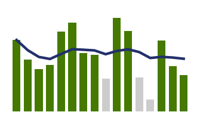
Show and record
dashboard, Assistant, audit trail
page 4
People decide
operator corrects, analyst approves
page 5